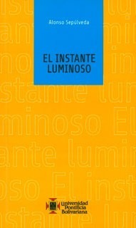

El instante luminoso
Reseña por Jorge I. Zuluaga

Ver reseña en GoodReads (necesita cuenta)
Alonso Sepúlveda fue mi maestro en la Universidad, la persona que me acercó a los primeros conceptos de astrofísica cuando era apenas un primíparo y la que después, primero en el pregrado y luego en el posgrado, despertó en mí la pasión por la física teórica y la física matemática.
Mientras leía "El instante luminoso", me parecía escuchar su voz, tranquila y hierática, con la que hipnotizaba a personas aficionadas y a profesionales por igual. Este libro definitivamente reúne sus grandes pasiones: la literatura, la historia de la ciencia y, por supuesto, la física misma.
Como lo habrán leído en la descripción, el libro es una colección de ensayos cortos (una o dos páginas) escritos en primera persona por grandes personajes de la historia de la astronomía y de la física: Eratóstenes, Galileo, Jacobi, Maxwell, Bohr, Oppenheimer, entre muchos otros. Los ensayos están organizados en orden cronológico, lo que convierte a "El instante luminoso" en una interesante minihistoria de la física.
Después de leer hasta dos veces los ensayos, tengo claramente unos preferidos. "Campo de' Fiori", que narra la última noche de Bruno en la voz de uno de sus verdugos. "La luz develada", una hermosa carta de James Clerk Maxwell a su pareja en la que describe de manera poética su descubrimiento de que la luz es una onda electromagnética. "La música de la materia", que pone en la voz de Niels Bohr una conexión hermosa entre la armonía de los cielos y de los átomos. "Nieve al amanecer", en la que Erwin Schrödinger describe la manera en la que descubrió la famosa ecuación y sus sentimientos encontrados por la forma en la que otros de sus contemporáneos la interpretaron. Y "El puente de los dioses", una verdadera joya de literatura histórico-científica sobre el descubrimiento de la violación de la paridad y una bella analogía con una obra arquitectónica china.
Me sorprendió "Eikonal" sobre Jacobi, quien, como aprendí aquí del mismo Alonso, descubrió que las partículas describían una ecuación similar a la que describen las ondas y que posiblemente fue la pionera del trabajo de Schrödinger.
El libro está lleno de pequeñas gemas literarias que me recordaron a Borges: "Cada instante de la vida de [las personas] sintetiza su historia singular e irrepetible", "Los acordes del cosmos son ajenos a los sentidos pero son cercanos al pensamiento", "En el infinito que soy cabe otro más amplio", "comprender es testimoniar en forma directa la armonía entre la estructura del mundo y las formas matemáticas", "¿no es acaso oficio del pensamiento transformar el mundo en un objeto de la abstracción?". Y más.
El libro también tiene sus sombras; tampoco esperaba que mi difunto maestro creara una obra perfecta.
El primero y el más obvio es la total ausencia de un solo personaje femenino en la relativamente extensa selección que hace Alonso. Con la excepción de una mención superficial de Virginia Galilei (o Maria Celeste), la brillante hija de Galileo, Alonso no pudo encontrar una sola mujer de la historia que le inspirara un relato. No quiero justificarlo, pero entiendo que hasta hace solo unos años el nivel de invisibilización del rol de las mujeres en la historia de la ciencia era mucho mayor de lo que es ahora. Un fenómeno que solo ahora está mermando con timidez.
El segundo y, por la misma línea, es el uso sistemático del masculino genérico. La mención a la palabra "hombres" y "hombre" es incluso exagerada en algunos apartes (p. ej., en la presentación). De nuevo, sin pretender justificar esta exclusión, creo que en el tiempo en el que el libro fue escrito esto era lamentablemente muy normal. Afortunadamente, los tiempos están cambiando.
El tercero son algunas imprecisiones históricas que pueden encontrarse en uno que otro ensayo. Por ahora solo se me ocurre recordar el ensayo de Max Planck en el que afirma que su hipótesis cuántica estaba dirigida a reconsiderar la naturaleza de la luz, cuando en realidad versaba sobre los átomos. Fueron precisamente Albert Einstein y (hasta ahora empezamos a reconocerlo) Mileva Marić en su artículo de 1905, quienes descubrieron que la hipótesis cuántica podía y debía extenderse a la luz.
Los anteriores defectos (que lo son para mí solamente) merman en muy poco lo logrado por Alonso en esta pequeña historia de la ciencia en código literario. ¡Larga vida a Sepúlveda!